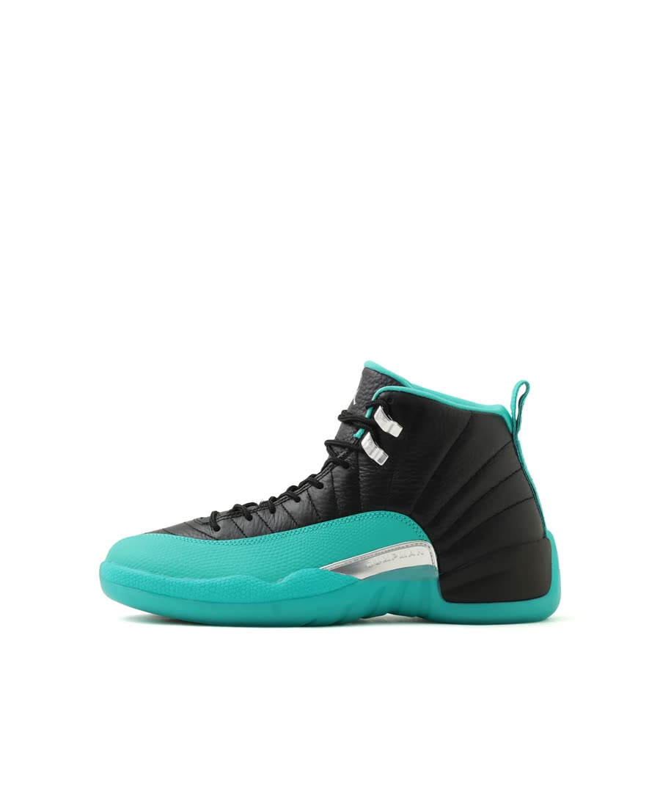

茨城・坂東市の「論露に不二」の純金目鯛ラーメンがめちゃくちゃ美味しかった茨城県坂東市のラーメン屋「論露に不二（ろんろにふじ）」に初めて行きました。「純金目鯛」と、ズワイ蟹のソースの替え玉。イタリアンみたいな見た目で、金目鯛と蟹の風味がしっかり。めちゃくちゃ美味しかったです。
茨城・坂東市の「論露に不二」の純金目鯛ラーメンがめちゃくちゃ美味しかった茨城県坂東市のラーメン屋「論露に不二（ろんろにふじ）」に初めて行きました。「純金目鯛」と、ズワイ蟹のソースの替え玉。イタリアンみたいな見た目で、金目鯛と蟹の風味がしっかり。めちゃくちゃ美味しかったです。 現場撮影の必需品。コストコで買ったAnker Nano Power Bank（MagSafe対応・2個入り）コストコで2個入りを買ったAnker Nano Power Bank（MagSafe対応・Qi2）。スニーカーの発売日や抽選の現場をiPhoneで撮るときの必需品になった理由と、軽くて薄くて片手で持ちやすいという第一印象。
現場撮影の必需品。コストコで買ったAnker Nano Power Bank（MagSafe対応・2個入り）コストコで2個入りを買ったAnker Nano Power Bank（MagSafe対応・Qi2）。スニーカーの発売日や抽選の現場をiPhoneで撮るときの必需品になった理由と、軽くて薄くて片手で持ちやすいという第一印象。
アトモス限定のAJ12「atmos JADE」が欲しい。WEB抽選に応募したアトモス限定のエアジョーダン12「atmos JADE」が欲しくて、アトモスオンラインのWEB抽選に応募しました。どんな靴か、なぜ欲しいか、応募のときに気をつけたこと。結果が出たら追記します。 MacBookに「何も足さない」ケースを選んだ理由。CASETiFY クリアケースを1か月使った感想CASETiFYの無地・透明のMacBookケースを選んだ理由と、使ってみてよかったところ・困っているところ。ステッカーで自分好みにできる一方、バッグに入らなくなった話。
MacBookに「何も足さない」ケースを選んだ理由。CASETiFY クリアケースを1か月使った感想CASETiFYの無地・透明のMacBookケースを選んだ理由と、使ってみてよかったところ・困っているところ。ステッカーで自分好みにできる一方、バッグに入らなくなった話。